How to read this
One document, four readers. Every feature below is written in the same shape, so you can skim straight to the part that is yours.
Read What it is and Why it matters. Skip the rest. Ten minutes end to end.
Add What the person sees and the status pill. That is scope and state in one pass.
What to check is your list. Every branch a person can reach is named there.
The same list, plus Rules that must hold — behaviour that is not allowed to drift.
The whole thing in one minute
A charity already runs donation campaigns. Peer-to-peer adds one idea on top: a supporter can ask on the charity’s behalf. They get their own page, with their own photo, their own story and their own goal, pointing at the charity’s campaign. They share that address. People who give through it are counted twice — once for the campaign, once for the supporter who asked.
The money does not change hands differently. Every donation still goes to the charity, through the same payment methods the campaign already accepted. The supporter never touches it, never holds it and is never paid out. Their page changes who asked, not where the money lands.
| Question | Answer |
|---|---|
| Who turns it on? | The charity, one campaign at a time. Off by default. Nothing appears anywhere until it is switched on. |
| Who can raise? | Anybody with an account, once they sign up and confirm their email address. |
| Does the charity approve pages? | Its choice. A campaign can let pages go live at once, or hold every page for review. |
| Can supporters group up? | Yes — teams, with a captain, when the charity allows teams on that campaign. |
| Who gets paid? | The charity. Always. There is no supporter payout, by design. |
| What if it goes wrong? | The charity can hide any page or team at any moment, and the address stops working. |
The journey, start to finish
- The charity switches it on for one campaign and picks its rules — approval, teams, a suggested goal.
- A supporter finds the campaign and sees a new invitation on it: raise for this.
- They sign up and confirm their email, then write their page — title, story, photo, goal.
- The charity reviews it, when that campaign asks for review. The supporter is told either way.
- They share the address. Friends open the page and give, through the campaign’s own payment methods.
- Everybody watches the numbers — the supporter on their console, the charity on its oversight screens, everyone on the leaderboard.
- Emails carry the story along — invitations, a welcome, a first-donation nudge, the approval or refusal notice.
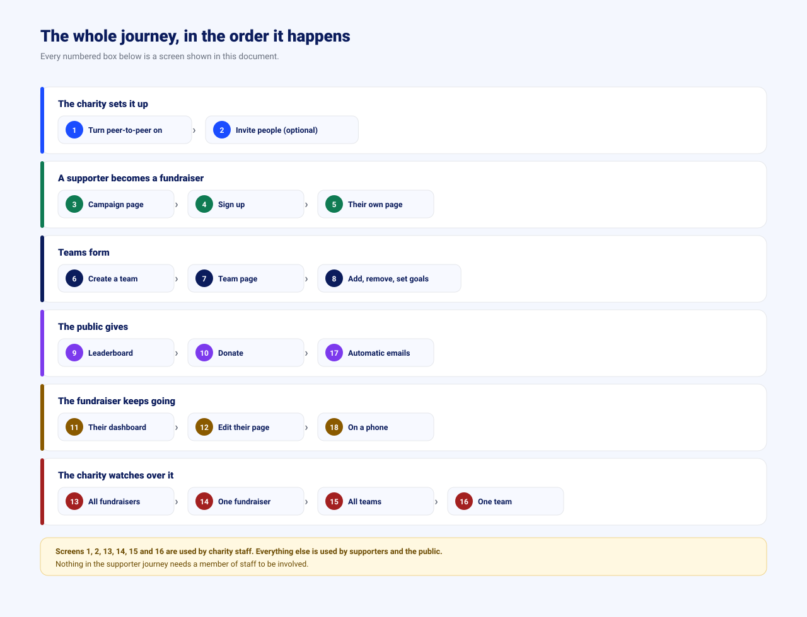
The features, one by one
Nine groups, in the order they were built and roughly the order a person meets them. Each one opens.
01 The switch, and the charity’s rules Delivered
What it is
One screen inside a donation campaign where the charity decides whether supporters may fundraise for it, and under what rules.
Why it matters
Nothing else in this feature exists until this switch is on. It is the charity’s guarantee that peer-to-peer never appears on a campaign that did not ask for it, and the one place to stop it if it ever needs stopping.
What the person sees
- A single on/off control for fundraising on this campaign.
- Directly beneath it, whether new pages go live at once or wait for the charity to approve them — the question the switch above immediately raises, answered without scrolling.
- Whether supporters may form teams.
- A suggested goal that a new page starts with.
- Who is allowed to see the leaderboard.
- The web address supporters will share, shown as it will really read.
What to check
- Save, reload — the settings are still as saved.
- A goal below one is refused on screen, and nothing is sent.
- Turning fundraising off asks first, and names what happens to pages that already exist.
- The settings read in this order: fundraising on, review before live, teams, suggested goal, leaderboard. Approval sits second because it is the only one here that can put a page in front of the public unread.
- At 375px wide the screen fits with no sideways scrolling and every control is thumb-sized.
Rules that must hold
- Off is the default for every existing campaign. Nothing switched itself on.
- Switching teams off stops new teams; teams that already exist stay readable rather than vanishing.
- The charity running the campaign cannot have a supporter page on it. Staff of that charity are offered no invitation on the campaign, and the server refuses the page even if the address is typed by hand. Staff of a different charity are ordinary supporters and may fundraise.
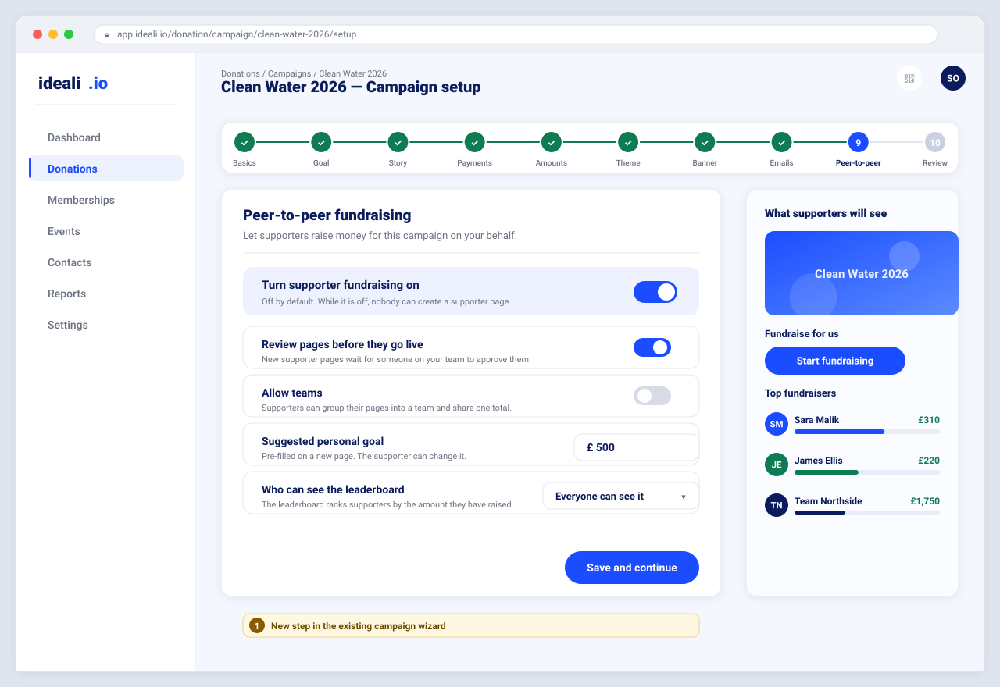
02 Becoming a fundraiser Delivered
What it is
The way in. An invitation on the campaign page, a sign-up, an email confirmation, and the form where a supporter writes their page.
Why it matters
This is where a supporter is either won or lost. It has to be short, and it has to be honest about what happens next — especially when the charity will review the page before anybody can see it.
What the person sees
- On the campaign, a short panel headed Fundraise for this campaign — only when the charity allows it, and only for somebody who has no page here yet. It sits above the campaign story, in the charity’s own campaign colour, so it is read whatever the story’s length.
- A supporter who already has a live page sees the way back to it instead — not the invitation again.
- A supporter waiting on the charity is told they are waiting, and can still open their own page.
- A supporter whose page was paused or turned down sees nothing about it here. That news reached them by email and it is written plainly on their own console; a public page a friend may be looking at is not the place to repeat it.
- Sign up or sign in, then a one-time email to confirm the address is really theirs.
- A form: page title, their story, a photo they can crop before it uploads, and their goal.
- A plain statement of what happens on save — live immediately, or waiting for the charity.
What to check
- A campaign with fundraising off shows no invitation at all — not a greyed one.
- On a campaign with a very long story, the invitation is still visible without reading to the end: it sits between the goal and the story, never underneath it.
- The invitation is drawn in the campaign’s own colour, not the product’s blue.
- An unconfirmed email cannot create a page, and the screen says why rather than just failing.
- The same person cannot create two pages on one campaign, and the campaign never invites them to try.
- The invitation is only drawn once the viewer’s own standing is known, so no wording is shown and then taken back, and the page does not jump.
- A confirmation link that was already used explains itself instead of breaking.
- Leaving the form with unsaved words asks before discarding them.
Rules that must hold
- An email address is confirmed once, and the link cannot be reused.
- Sign-up requests are rate limited per address; a burst is refused rather than served.
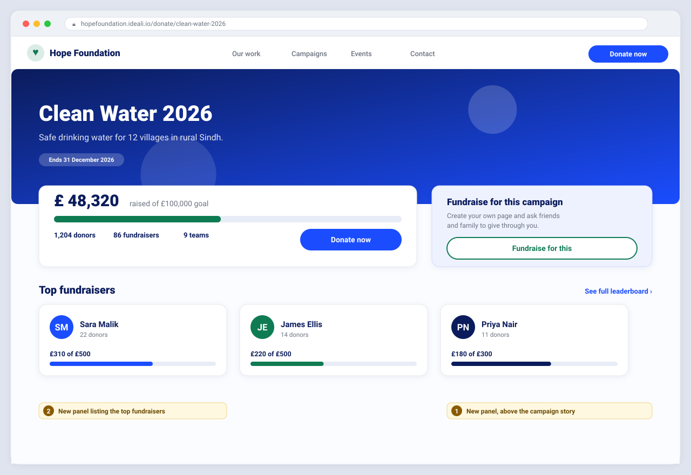
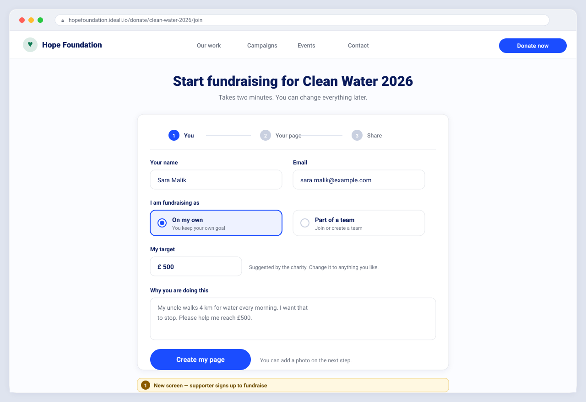
03 A public page that takes money Delivered
What it is
The supporter’s page as a stranger sees it, and the donation flow behind its button.
Why it matters
This is the page that gets pasted into a group chat. It is the only screen here that a complete stranger will judge the charity by, so it has to load fast, read well and take money without a wobble.
What the person sees
- The supporter’s photo, title and story, with the charity’s campaign named above them.
- Progress towards their goal, the donor count, and recent donations.
- One donate action, leading into the campaign’s own donation flow.
- An address that can be copied, with a readable fallback when copying fails.
What to check
- Every payment method the campaign already offered is offered here too — card, bank debit and wallet alike.
- The gift lands against both the campaign and the supporter, and the two totals agree.
- A page waiting for approval, hidden, or never created shows its own explained screen — never a broken one.
- No email address and no account identifier is ever visible on the public page.
- Long stories and long names do not break the layout at any width.
Rules that must hold
- Peer-to-peer changes nothing about existing payment methods. Zero tolerance on this.
- A donation is never lost, and never counted twice, when it is attributed to a supporter.
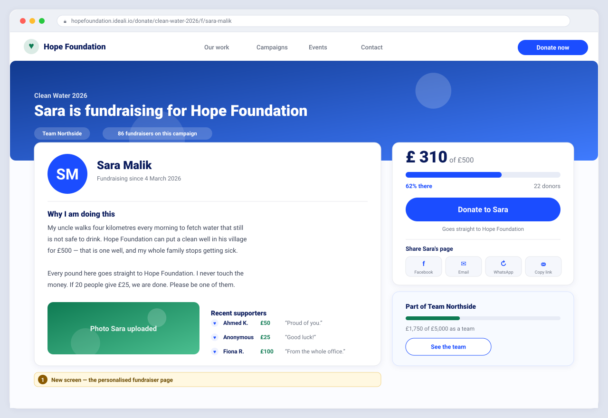
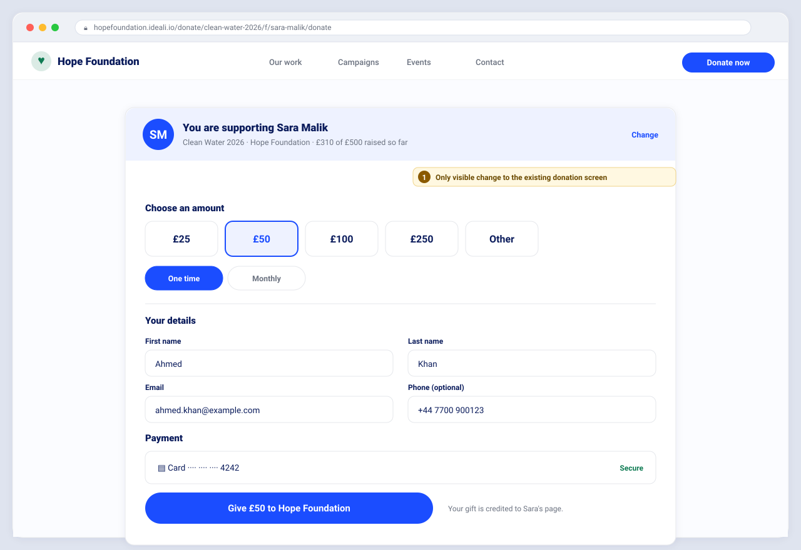
04 The fundraiser’s own console Delivered
What it is
The supporter’s private screen: how they are doing, who gave, and the way back into editing their page.
Why it matters
A supporter who cannot see progress stops asking. This screen is what brings them back, and what makes them share again.
What the person sees
- Their total against their goal, and how many people have given.
- Recent donations, most recent first.
- The share panel, identical to the one on their public page.
- One primary action: edit my page. Plus a link to view it as the public sees it.
- Their team, when they are in one.
What to check
- Somebody with no page yet is offered the way to create one, not shown an empty console.
- A page still waiting for approval says so, and the share panel behaves accordingly.
- Editing and saving updates the public page; cancelling changes nothing.
- Leaving edit with unsaved changes asks first — including when the browser tab is closed.
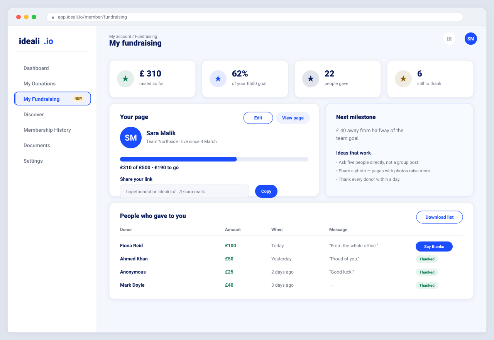
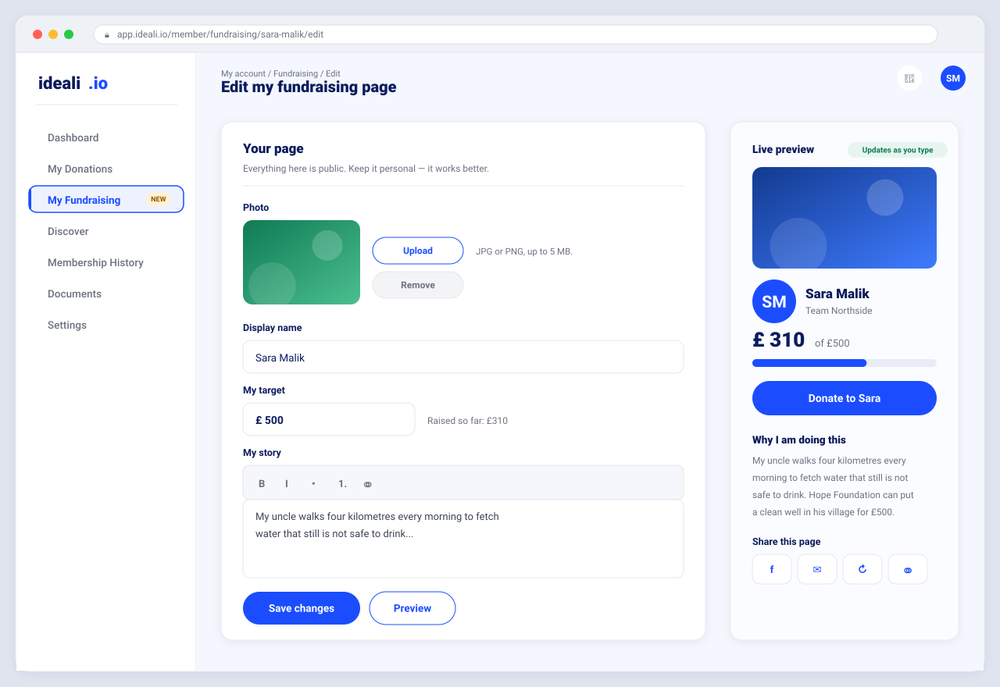
05 Teams Delivered
What it is
Supporters can group their pages under one team, with a captain who runs it and a public team page that adds their totals together.
Why it matters
Teams are how a workplace, a family or a running club raise together. They raise more than the same people raise alone, because a team total is something to chase.
What the person sees
- A list of teams on the campaign, each with its standing, its size and its captain.
- Start a team, or join one, when they are fundraising and not already in a team.
- A public team page: combined total against a team goal, and every member with their own figure.
- For a captain: manage members, remove somebody, hand the captaincy on.
What to check
- The member figures add up to the team total, every time.
- Removing a member says plainly that their page and their donations are unaffected — and that is true.
- Handing over the captaincy names the person taking it, and says it cannot be undone by the person giving it away.
- A plain member is refused every captain action, and the refusal changes nothing.
- The last member leaving closes the team, and every gift the campaign banked stays exactly where it was.
- With teams switched off: no new team, no joining, and existing teams stay readable.
Rules that must hold
- A team is not a payee. Donating from a team page asks which member to support first.
- A captain cannot remove themselves — leaving is the way out, and the server refuses it too.
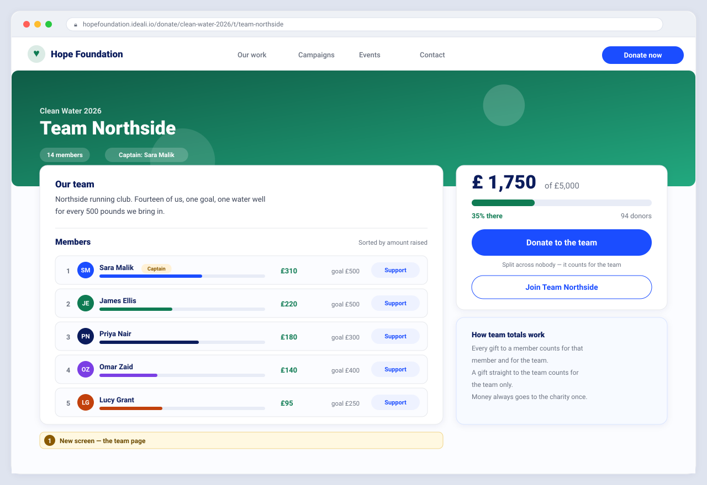
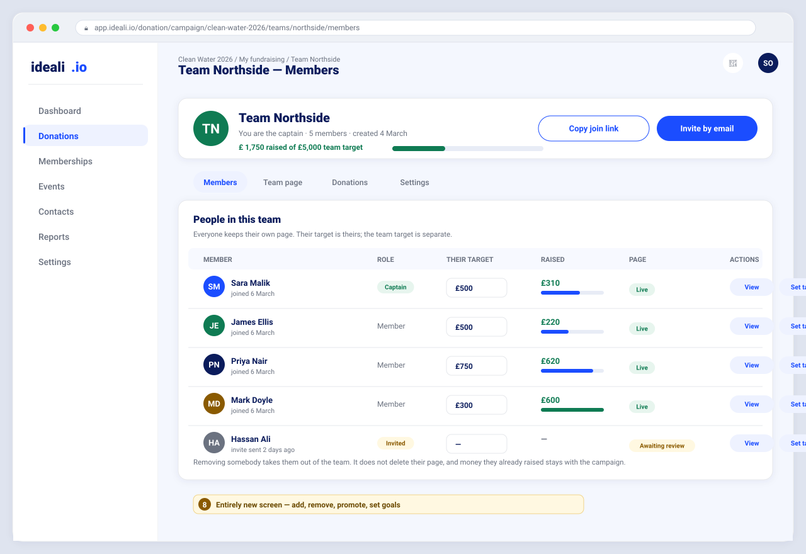
06 The charity watches over it Delivered
What it is
The charity’s oversight: every page and every team its supporters made, what each has raised, and the power to approve, refuse, hide or bring back.
Why it matters
This is the answer to the one question that stops a charity switching this on: what if somebody puts something inappropriate under our name? One screen, one action, and it is gone.
What the person sees
- A list of fundraising pages with search, a status filter, and an export.
- One page in full: what the supporter wrote, what they raised, and the decisions taken on it so far.
- Approve, refuse, hide, or bring back — each confirming with its consequence named.
- The same for teams: list, filter, review, hide, restore.
What to check
- Approving puts the page live, and the supporter is told.
- Refusing keeps the charity’s note private — the supporter learns the decision, never the note.
- A page that was refused can still be approved later, so a decision taken in haste is not final.
- Hiding a page takes it down and its address stops serving; bringing it back restores it.
- A hidden team disappears from public browsing, but its members’ own pages stay live.
- The totals on the charity’s screens agree with each other and with the money actually banked.
- Export hands over a file named after the campaign.
- A reason longer than allowed is refused on screen, and nothing is sent.
Rules that must hold
- The refusal note reaches nobody outside the charity, in any form.
- Another charity’s pages are unreachable, and the refusal does not reveal whether they exist.
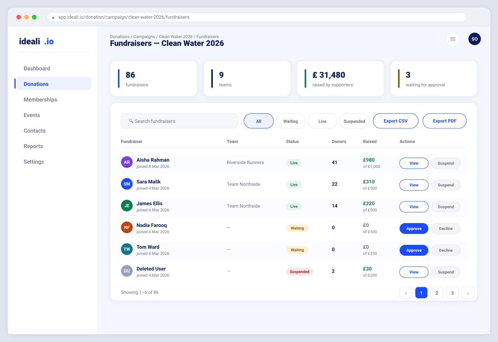
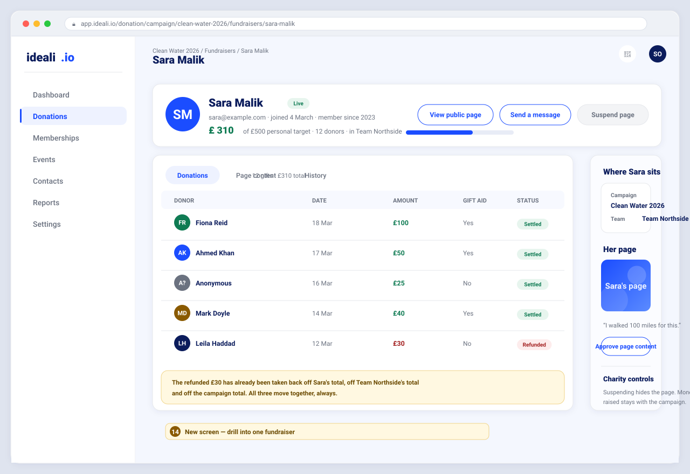
07 Invitations and the emails Delivered
What it is
The charity can invite people to fundraise by email, and edit the wording of every automatic message the feature sends.
Why it matters
Most supporters do not stumble onto a campaign — they are asked. This turns a mailing list into fundraisers, in the charity’s own voice rather than ours.
What the person sees
- An invite screen that states plainly that nothing is created until the person agrees.
- Editable templates: subject, body, on or off, and a way to send a test to yourself.
- A landing page for the invited person, and a one-click way to stop receiving them.
What to check
- A malformed address is refused on screen, and nothing is written or sent.
- Send stays unavailable until there is something to send, showing a “not allowed” cursor.
- Unsubscribing works from the email without signing in, and is honoured afterwards.
- The same automatic email is never sent twice for the same event.
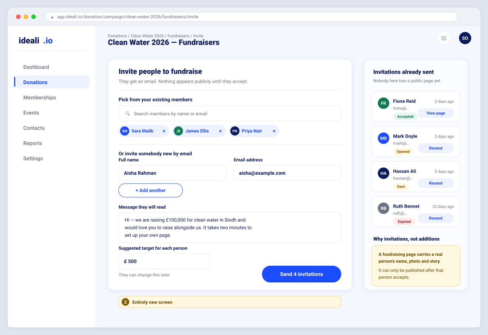
08 Competition — the leaderboard Delivered
What it is
Public standings for a campaign: who has raised what, individually and by team.
Why it matters
Visible standings are the cheapest fundraising mechanic there is. People who can see their position raise more, and they come back to check it.
What the person sees
- Ranked supporters and ranked teams, each linking to its page.
- A designed empty state when nobody has raised yet — not a blank table.
What to check
- Standings match the totals shown on the individual pages.
- Hidden pages and hidden teams do not appear.
- Nothing on the board exposes an email address or an account identifier.
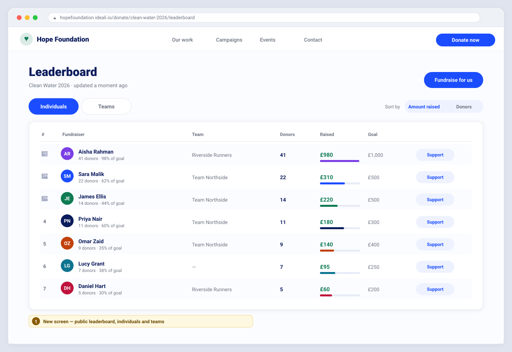
09 Telling the supporter what was decided Delivered
What it is
When the charity approves or refuses a page, the supporter is emailed once, automatically.
Why it matters
Before this, a supporter who wrote a page and waited heard nothing at all. Silence after asking somebody to volunteer is how volunteers are lost.
What the person sees
- Approved: one email saying the page is live, carrying its address.
- Refused: one email saying the charity could not publish it — and nothing more.
- Both messages are editable by the charity, like every other template.
What to check
- Exactly one email per decision. A second decision on the same review sends nothing.
- The refusal carries neither the charity’s private note nor any gap where it used to be.
- Hiding a page sends nothing — nobody was waiting on that.
Worth a decision. If the charity switches the “page approved” message off, supporters go back to hearing nothing — the exact silence this feature was built to end — and the screen gives no warning. Suggested: keep the switch, add a plain warning beside it. Open for discussion.
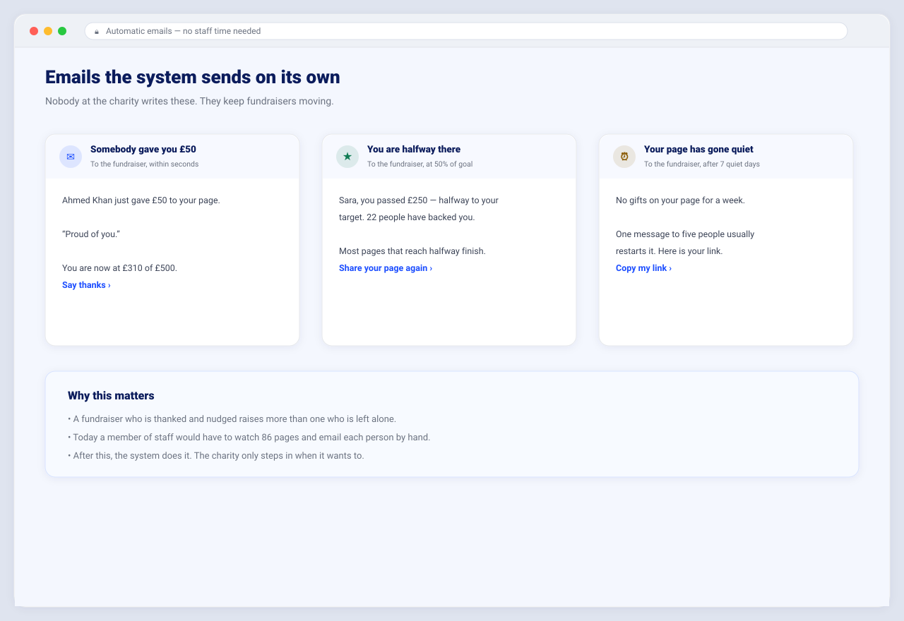
Every screen, and whose it is
| # | Screen | Whose | State |
|---|---|---|---|
| 01 | Campaign fundraising settings | Charity | Delivered |
| 02 | Campaign page entry point | Public | Delivered |
| 03 | Create my fundraising page | Supporter | Delivered |
| 04 | A fundraiser’s public page | Public | Delivered |
| 05 | Public team page | Public | Delivered |
| 06 | Leaderboard | Public | Delivered |
| 07 | Donating through a page | Public | Delivered |
| 08 | My fundraising console | Supporter | Delivered |
| 09 | Editing my page | Supporter | Delivered |
| 10 | Fundraising pages list | Charity | Delivered |
| 11 | Lifecycle emails | Charity | Delivered |
| 12 | The phone pass — every screen at 375px | Everyone | Delivered |
| 13 | Invite people to fundraise | Charity | Delivered |
| 14 | Start a team | Supporter | Delivered |
| 15 | Captain’s member management | Supporter | Delivered |
| 16 | Teams list | Charity | Delivered |
| 17 | Reviewing one team | Charity | Delivered |
| 18 | Reviewing one fundraising page | Charity | Delivered |
| 19 | The invitation email | Supporter | Delivered |
| 20 | Fundraiser sign-up | Supporter | Delivered |
| 21 | Fundraiser sign-in | Supporter | Delivered |
| 22 | The menu item that leads in | Supporter | Delivered |
| 23 | Browse teams | Public | Delivered |
Promises this feature makes
These are not preferences. If one of them stops being true, the feature is broken regardless of what else works.
| Promise | What it means in practice |
|---|---|
| Existing donations are untouched | Card, bank debit and wallet payments behave exactly as they did. A campaign with fundraising off is the campaign it always was. |
| The charity is always in control | Off by default, optional approval, and any page or team can be taken down in one action. |
| Money only ever goes to the charity | No supporter payout exists anywhere in the feature, by design. |
| Nobody’s private details leak | Public pages carry no email address and no account identifier — not for the supporter, not for donors. |
| Private notes stay private | A refusal reason written by the charity is never sent, shown or hinted at outside the charity. |
| It works on a phone | Every screen is checked at 320, 375, 768, 1024, 1440 and 1920 pixels wide, with no sideways scrolling and thumb-sized controls. |
| Every number can be accounted for | Supporter totals, team totals and campaign totals reconcile against the money actually banked. |
What this deliberately does not do
- No supporter payouts. Supporters raise; the charity is paid. Nothing else.
- No offline or cash entry against a supporter’s page.
- No matched giving or employer matching in this release.
- No supporter-to-supporter messaging. Sharing happens through the address, in the channels people already use.
- No formatting in a supporter’s story. Plain words only — a deliberate safety choice, open to revisit.
- A supporter cannot delete their own page. They ask the charity, which can hide it. Also open to revisit.
Open for discussion
A live list. It changes as we talk, and every answer lands in the decision log underneath.
1. Switching the approval email off
The charity can turn off the message that tells a supporter their page is live. Doing so restores exactly the silence this feature was built to end, and nothing on screen says so. Suggested: keep the switch, add a warning beside it.
2. Turning teams off while teams exist
Today: no new teams, no joining, existing teams stay readable. That is the safe behaviour, but the charity is not told what happens to the teams already out there. Suggested: say it in the confirmation, in numbers — “4 teams stay live and readable”.
3. A supporter withdrawing their own page
There is no way for a supporter to take their own page down; they must ask the charity. Question: deliberate policy, or a gap?
4. Plain-text stories
Supporters write plain words — no bold, no paragraphs, no links. Safe, but it makes a long story hard to read. Question: is limited formatting worth adding?
5. Where fundraising sits in the menu
A supporter reaches their console through a menu item that appears once they are fundraising. Question: discoverable enough, or should the campaign itself always link back?
Decision log
Settled, and not reopened. Added to as we talk.
| Decision | Where it landed |
|---|---|
| Peer-to-peer is per campaign, off by default | The charity opts in one campaign at a time. No existing campaign changed on its own. |
| Approval is the charity’s choice, not ours | A campaign either publishes pages at once or holds every one for review. |
| One page per person per campaign | Enforced, so totals and standings can never be split across duplicates. |
| A team is not a payee | Donating from a team page asks which member to support first. |
| Refusal notes stay with the charity | The supporter is told the decision, never the reason. |
| Existing payment methods are untouchable | No change of any kind to card, bank debit or wallet donations. |
| A page names the campaign, not just the charity | The line under a supporter’s name reads “Fundraising for <campaign>”, with “by <charity>” under it. A gift is ring-fenced to a campaign, so that is what a donor is told, and the campaign name opens the campaign. |
| The charity is named in plain text, never a tag | The charity issues the receipt, so it is readable text beside the campaign rather than a decorative pill. |
| A charity does not fundraise for itself | Whoever runs a campaign also decides which pages on it go live. A page of their own would be approved by its own author and would count the charity among its own supporters, so the invitation is not offered to them and the server refuses the page. |
| Settings are ordered by consequence, not by kind | Whether pages are reviewed before they go live now sits directly under the switch that creates those pages. It is the only setting on that screen whose wrong value is publicly visible, so it is read before the settings that merely tune the experience. |
| The fundraising offer sits above the campaign story, not below it | A campaign story has no length limit, so a control underneath one is only ever seen by a reader who got to the end — while the campaign’s own donate card is in view from the first moment. The offer that asks for more commitment was the one nobody was being shown. It now sits between the goal and the story: read after the reader knows what the campaign is for, and read whatever the story’s length. |
| The offer is drawn in the charity’s campaign colour | Every other surface on a campaign page uses the colour the charity chose. A control in the product’s own brand colour read as an advertisement dropped onto the page rather than a second thing the campaign is offering, so it now follows the campaign like everything around it. |
| The campaign invitation reads the supporter’s own state | Somebody already fundraising is offered their page, somebody waiting is told they are waiting, and somebody with no page is invited. The invitation stays a working control in every case — never a dead sentence where a button used to be. |
| A refusal is never written on a public screen | A supporter whose page was turned down is told once by email and once on their own private console, where the wording also says what to do about it. The campaign page carries nothing, because a stranger or a friend may be reading it over their shoulder. Silence there is not hiding it; the person already knows. |
| A refusal is not the end of it | The charity can still approve a page it turned down, so a decision made in haste is reversible without anybody being locked out of the campaign. |
| The count of other fundraisers is not shown to donors | It answers nothing a donor is deciding, and on a new campaign it reads as nobody else caring. Removed from the public page, and the server no longer counts them either — one database query per page view saved on the busiest public screen we have. |